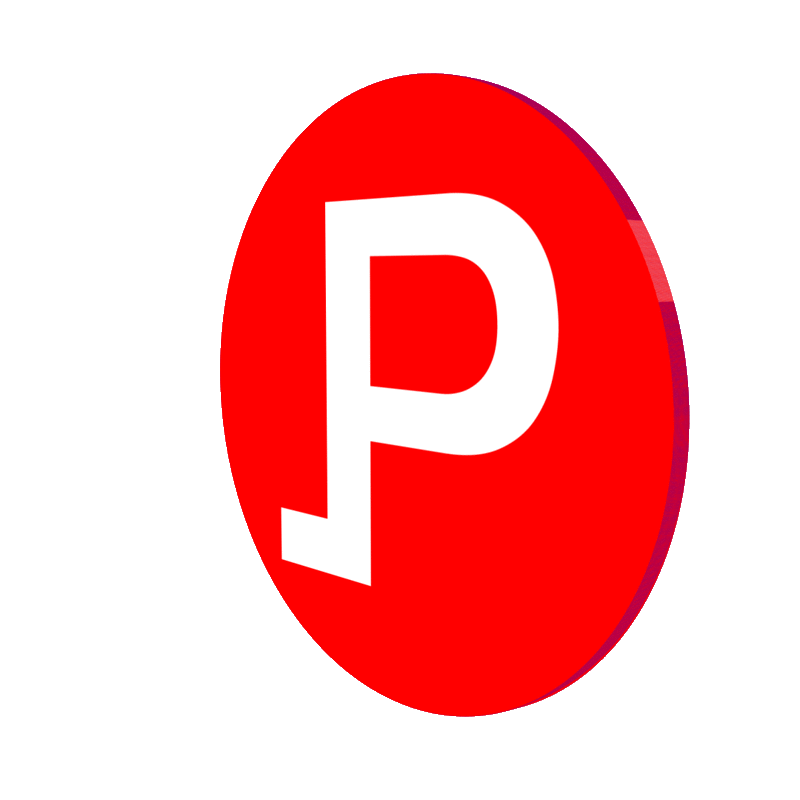

The Libertarian solution to a Democratic problem.
Due to the decline in revenue from ads websites are deciding instead to use some of your CPU power to mine cryptocurrency while you are a guest on their page.
The political campaigns of the 21st century are fought on the web and thus should be funded through the networked labor of their supporters' computers.
